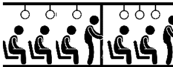
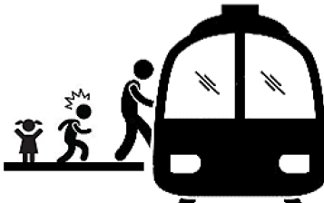
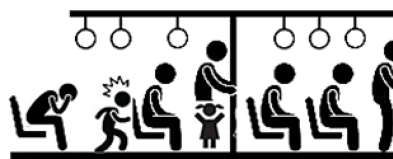
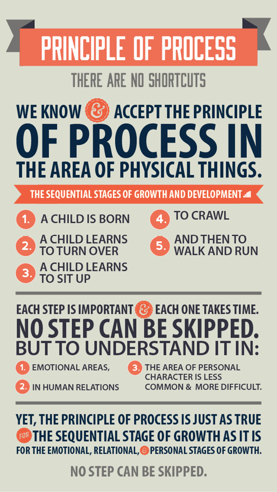
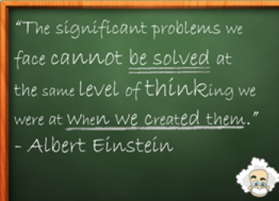
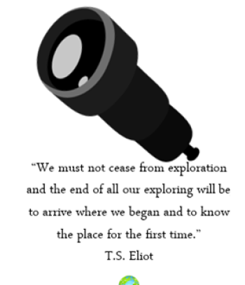

He brought into the room a stack of large cards, half of which had the image of the young woman you saw on page 33, and the other half of which had the image of the old woman on page 53.
He passed them out to the class, the picture of the young woman to one side of the room and the picture of the old woman to the other. He asked us to look at the cards, concentrate on them for about ten seconds and then pass them back in. He then projected upon the screen the picture you saw on page 34 combining both images and asked the class to describe what they saw. Almost every person in that class who had first seen the young woman’s image on a card saw the young woman in the picture. And almost every person who had first seen the old woman’s image on a card saw an old woman in the picture.
The professor then asked one student to explain what he saw to a student on the opposite side of the room. As they talked back and forth, communication problems flared up.
“What do you mean, ‘old lady’? She couldn’t be more than 20 or 22 years old!”
“Oh, come on. You have to be joking. She’s 70—could be pushing 80!”
“What’s the matter with you? Are you blind? This lady is young, good looking. I’d like to take her out. She’s lovely.”
“Lovely? She’s an old hag.”
The arguments went back and forth, each person sure of, and adamant in, his or her position. All of this occurred in spite of one exceedingly important advantage the students had—most of them knew early in the demonstration that another point of view did, in fact, exist—something many of us would never admit. Nevertheless, at first, only a few students really tried to see this picture from another frame of reference.
After a period of futile communication, one student went up to the screen and pointed to a line on the drawing. “There is the young woman’s necklace.” The other one said, “No, that is the old woman’s mouth.” Gradually, they began to calmly discuss specific points of difference, and finally one student, and then another, experienced sudden recognition when the images of both came into focus. Through continued calm, respectful, and specific communication, each of us in the room was finally able to see the other point of view. But when we looked away and then back, most of us would immediately see the image we had been conditioned to see in the ten-second period of time.
I frequently use this perception demonstration in working with people and organizations because it yields so many deep insights into both personal and interpersonal effectiveness. It shows, first of all, how powerfully conditioning affects our perceptions, our paradigms. If ten seconds can have that kind of impact on the way we see things, what about the conditioning of a lifetime? The influences in our lives—family, school, church, work environment, friends, associates, and current social paradigms such as the Personality Ethic—all have made their silent unconscious impact on us and help shape our frame of reference, our paradigms, our maps.
It also shows that these paradigms are the source of our attitudes and behaviors. We cannot act with integrity outside of them. We simply cannot maintain wholeness if we talk and walk differently than we see. If you were among the 90 percent who typically see the young woman in the composite picture when conditioned to do so, you undoubtedly found it difficult to think in terms of having to help her cross the street. Both your attitude about her and your behavior toward her had to be congruent with the way you saw her.
This brings into focus one of the basic flaws of the Personality Ethic. To try to change outward attitudes and behaviors does very little good in the long run if we fail to examine the basic paradigms from which those attitudes and behaviors flow.
This perception demonstration also shows how powerfully our paradigms affect the way we interact with other people. As clearly and objectively as we think we see things, we begin to realize that others see them differently from their own apparently equally clear and objective point of view. “Where we stand depends on where we sit.”
Each of us tends to think we see things as they are, that we are objective. But this is not the case. We see the world, not as it is, but as we are—or, as we are conditioned to see it. When we open our mouths to describe what we see, we in effect describe ourselves, our perceptions, our paradigms. When other people disagree with us, we immediately think something is wrong with them. But, as the demonstration shows, sincere, clearheaded people see things differently, each looking through the unique lens of experience.
This does not mean that there are no facts. In the demonstration, two individuals who initially have been influenced by different conditioning pictures look at the third picture together. They are now both looking at the same identical facts—black lines and white spaces—and they would both acknowledge these as facts. But each person’s interpretation of these facts represents prior experiences, and the facts have no meaning whatsoever apart from the interpretation.
The more aware we are of our basic paradigms, maps, or assumptions, and the extent to which we have been influenced by our experience, the more we can take responsibility for those paradigms, examine them, test them against reality, listen to others and be open to their perceptions, thereby getting a larger picture and a far more objective view.
THE POWER OF A PARADIGM SHIFT
Perhaps the most important insight to be gained from the perception demonstration is in the area of paradigm shifting, what we might call the “Aha!” experience when someone finally “sees” the composite picture in another way. The more bound a person is by the initial perception, the more powerful the “Aha!” experience is. It’s as though a light were suddenly turned on inside.
The term paradigm shift was introduced by Thomas Kuhn in his highly influential landmark book, The Structure of Scientific Revolutions. Kuhn shows how almost every significant breakthrough in the field of scientific endeavor is first a break with tradition, with old ways of thinking, with old paradigms.
For Ptolemy, the great Egyptian astronomer, the earth was the center of the universe. But Copernicus created a paradigm shift, and a great deal of resistance and persecution as well, by placing the sun at the center. Suddenly, everything took on a different interpretation.
The Newtonian model of physics was a clockwork paradigm and is still the basis of modern engineering. But it was partial, incomplete. The scientific world was revolutionized by the Einsteinian paradigm, the relativity paradigm, which had much higher predictive and explanatory value.
Until the germ theory was developed, a high percentage of women and children died during childbirth, and no one could understand why. In military skirmishes, more men were dying from small wounds and diseases than from the major traumas on the front lines. But as soon as the germ theory was developed, a whole new paradigm, a better, improved way of understanding what was happening, made dramatic, significant medical improvement possible.
The United States today is the fruit of a paradigm shift. The traditional concept of government for centuries had been a monarchy, the divine right of kings. Then a different paradigm was developed—government of the people, by the people, and for the people. And a constitutional democracy was born, unleashing tremendous human energy and ingenuity, and creating a standard of living, of freedom and liberty, of influence and hope unequaled in the history of the world.
Not all paradigm shifts are in positive directions. As we have observed, the shift from the Character Ethic to the Personality Ethic has drawn us away from the very roots that nourish true success and happiness.
But whether they shift us in positive or negative directions, whether they are instantaneous or developmental, paradigm shifts move us from one way of seeing the world to another. And those shifts create powerful change. Our paradigms, correct or incorrect, are the sources of our attitudes and behaviors, and ultimately our relationships with others.
***
I remember a mini-paradigm shift I experienced one Sunday morning on a subway in New York. People were sitting quietly—some reading newspapers, some lost in thought, some resting with their eyes closed. It was a calm, peaceful scene.

Then suddenly, a man and his children entered the subway car. The children were so loud and rambunctious that instantly the whole climate changed.
The man sat down next to me and closed his eyes, apparently oblivious to the situation. The children were yelling back and forth, throwing things, even grabbing people’s papers. It was very disturbing. And yet, the man sitting next to me did nothing.

It was difficult not to feel irritated. I could not believe that he could be so insensitive as to let his children run wild like that and do nothing about it, taking no responsibility at all. It was easy to see that everyone else on the subway felt irritated, too. So finally, with what I felt was unusual patience and restraint, I turned to him and said, “Sir, your children are really disturbing a lot of people. I wonder if you couldn’t control them a little more?”
The man lifted his gaze as if to come to a consciousness of the situation for the first time and said softly, “Oh, you’re right. I guess I should do something about it. We just came from the hospital where their mother died about an hour ago. I don’t know what to think, and I guess they don’t know how to handle it either.”

Can you imagine what I felt at that moment? My paradigm shifted. Suddenly I saw things differently, and because I saw differently, I thought differently, I felt differently, I behaved differently. My irritation vanished. I didn’t have to worry about controlling my attitude or my behavior; my heart was filled with the man’s pain. Feelings of sympathy and compassion flowed freely. “Your wife just died? Oh, I’m so sorry! Can you tell me about it? What can I do to help?” Everything changed in an instant.
***
Many people experience a similar fundamental shift in thinking when they face a life-threatening crisis and suddenly see their priorities in a different light, or when they suddenly step into a new role, such as that of husband or wife, parent or grandparent, manager or leader.
We could spend weeks, months, even years laboring with the Personality Ethic trying to change our attitudes and behaviors and not even begin to approach the phenomenon of change that occurs spontaneously when we see things differently.
It becomes obvious that if we want to make relatively minor changes in our lives, we can perhaps appropriately focus on our attitudes and behaviors. But if we want to make significant, quantum change, we need to work on our basic paradigms.
In the words of Thoreau, “For every thousand hacking at the leaves of evil, there is one striking at the root.” We can only achieve quantum improvements in our lives as we quit hacking at the leaves of attitude and behavior and get to work on the root, the paradigms from which our attitudes and behaviors flow.
SEEING AND BEING
Of course, not all paradigm shifts are instantaneous. Unlike my instant insight on the subway, the paradigm-shifting experience Sandra and I had with our son was a slow, difficult, and deliberate process. The approach we had first taken with him was the outgrowth of years of conditioning and experience in the Personality Ethic. It was the result of deeper paradigms we held about our own success as parents as well as the measure of success of our children. And it was not until we changed those basic paradigms, until we saw things differently, that we were able to create quantum change in ourselves and in the situation.
In order to see our son differently, Sandra and I had to be differently. Our new paradigm was created as we invested in the growth and development of our own character.
Paradigms are inseparable from character. Being is seeing in the human dimension. And what we see is highly interrelated to what we are. We can’t go very far to change our seeing without simultaneously changing our being, and vice versa.
Even in my apparently instantaneous paradigm-shifting experience that morning on the subway, my change of vision was a result of—and limited by—my basic character.
I’m sure there are people who, even suddenly understanding the true situation, would have felt no more than a twinge of regret or vague guilt as they continued to sit in embarrassed silence beside the grieving, confused man. On the other hand, I am equally certain there are people who would have been far more sensitive in the first place, who may have recognized that a deeper problem existed and reached out to understand and help before I did.
Paradigms are powerful because they create the lens through which we see the world. The power of a paradigm shift is the essential power of quantum change, whether that shift is an instantaneous or a slow and deliberate process.
THE PRINCIPLE-CENTERED PARADIGM
The Character Ethic is based on the fundamental idea that there are principles that govern human effectiveness—natural laws in the human dimension that are just as real, just as unchanging and unarguably “there” as laws such as gravity are in the physical dimension.
An idea of the reality—and the impact—of these principles can be captured in another paradigm-shifting experience as told by Frank Koch in Proceedings, the magazine of the Naval Institute.
Two battleships assigned to the training squadron had been at sea on maneuvers in heavy weather for several days. I was serving on the lead battleship and was on watch on the bridge as night fell. The visibility was poor with patchy fog, so the captain remained on the bridge keeping an eye on all activities.
Shortly after dark, the lookout on the wing of the bridge reported, “Light, bearing on the starboard bow.”
“Is it steady or moving astern?” the captain called out.
Lookout replied, “Steady, captain,” which meant we were on a dangerous collision course with that ship.
The captain then called to the signalman, “Signal that ship: We are on a collision course, advise you change course 20 degrees.”
Back came a signal, “Advisable for you to change course 20 degrees.”
The captain said, “Send, I’m a captain, change course 20 degrees.”
“I’m a seaman second class,” came the reply. “You had better change course 20 degrees.”
By that time, the captain was furious. He spat out, “Send, I’m a battleship. Change course 20 degrees.”
Back came the flashing light, “I’m a lighthouse.”
We changed course.
The paradigm shift experienced by the captain—and by us as we read this account—puts the situation in a totally different light. We can see a reality that is superseded by his limited perception—a reality that is as critical for us to understand in our daily lives as it was for the captain in the fog.
Principles are like lighthouses. They are natural laws that cannot be broken. As Cecil B. DeMille observed of the principles contained in his monumental movie, The Ten Commandments, “It is impossible for us to break the law. We can only break ourselves against the law.”
While individuals may look at their own lives and interactions in terms of paradigms or maps emerging out of their experience and conditioning, these maps are not the territory. They are a “subjective reality,” only an attempt to describe the territory.
The “objective reality,” or the territory itself, is composed of “lighthouse” principles that govern human growth and happiness—natural laws that are woven into the fabric of every civilized society throughout history and comprise the roots of every family and institution that has endured and prospered. The degree to which our mental maps accurately describe the territory does not alter its existence.
The reality of such principles or natural laws becomes obvious to anyone who thinks deeply and examines the cycles of social history. These principles surface time and time again, and the degree to which people in a society recognize and live in harmony with them moves them toward either survival and stability or disintegration and destruction.
The principles I am referring to are not esoteric, mysterious, or “religious” ideas. There is not one principle taught in this book that is unique to any specific faith or religion, including my own. These principles are a part of most every major enduring religion, as well as enduring social philosophies and ethical systems. They are self-evident and can easily be validated by any individual. It’s almost as if these principles or natural laws are part of the human condition, part of the human consciousness, part of the human conscience. They seem to exist in all human beings, regardless of social conditioning and loyalty to them, even though they might be submerged or numbed by such conditions or disloyalty.
I am referring, for example, to the principle of fairness, out of which our whole concept of equity and justice is developed. Little children seem to have an innate sense of the idea of fairness even apart from opposite conditioning experiences. There are vast differences in how fairness is defined and achieved, but there is almost universal awareness of the idea.
Other examples would include integrity and honesty. They create the foundation of trust which is essential to cooperation and long-term personal and interpersonal growth.
Another principle is human dignity. The basic concept in the United States Declaration of Independence bespeaks this value or principle. “We hold these truths to be self-evident, that all men are created equal, that they are endowed by their Creator with certain unalienable Rights, that among these are Life, Liberty, and the pursuit of Happiness.”
Another principle is service, or the idea of making a contribution. Another is quality or excellence.
There is the principle of potential, the idea that we are embryonic and can grow and develop and release more and more potential, develop more and more talents. Highly related to potential is the principle of growth—the process of releasing potential and developing talents, with the accompanying need for principles such as patience, nurturance, and encouragement.
Principles are not practices. A practice is a specific activity or action. A practice that works in one circumstance will not necessarily work in another, as parents who have tried to raise a second child exactly like they did the first can readily attest.
While practices are situationally specific, principles are deep, fundamental truths that have universal application. They apply to individuals, to marriages, to families, to private and public organizations of every kind. When these truths are internalized into habits, they empower people to create a wide variety of practices to deal with different situations.
Principles are not values. A gang of thieves can share values, but they are in violation of the fundamental principles we’re talking about. Principles are the territory. Values are maps. When we value correct principles, we have truth—a knowledge of things as they are.
Principles are guidelines for human conduct that are proven to have enduring, permanent value. They’re fundamental. They’re essentially unarguable because they are self-evident. One way to quickly grasp the self-evident nature of principles is to simply consider the absurdity of attempting to live an effective life based on their opposites. I doubt that anyone would seriously consider unfairness, deceit, baseness, uselessness, mediocrity, or degeneration to be a solid foundation for lasting happiness and success. Although people may argue about how these principles are defined or manifested or achieved, there seems to be an innate consciousness and awareness that they exist.
The more closely our maps or paradigms are aligned with these principles or natural laws, the more accurate and functional they will be. Correct maps will infinitely impact our personal and interpersonal effectiveness far more than any amount of effort expended on changing our attitudes and behaviors.
PRINCIPLES OF GROWTH AND CHANGE
The glitter of the Personality Ethic, the massive appeal, is that there is some quick and easy way to achieve quality of life—personal effectiveness and rich, deep relationships with other people—without going through the natural process of work and growth that makes it possible.
It’s symbol without substance. It’s the “get rich quick” scheme promising “wealth without work.” And it might even appear to succeed—but the schemer remains.
The Personality Ethic is illusory and deceptive. And trying to get high quality results with its techniques and quick fixes is just about as effective as trying to get to some place in Chicago using a map of Detroit.
In the words of Erich Fromm, an astute observer of the roots and fruits of the Personality Ethic:
Today we come across an individual who behaves like an automaton, who does not know or understand himself, and the only person that he knows is the person that he is supposed to be, whose meaningless chatter has replaced communicative speech, whose synthetic smile has replaced genuine laughter, and whose sense of dull despair has taken the place of genuine pain. Two statements may be said concerning this individual. One is that he suffers from defects of spontaneity and individuality which may seem to be incurable. At the same time it may be said of him he does not differ essentially from the millions of the rest of us who walk upon this earth.
In all of life, there are sequential stages of growth and development. A child learns to turn over, to sit up, to crawl, and then to walk and run. Each step is important and each one takes time. No step can be skipped.

This is true in all phases of life, in all areas of development, whether it be learning to play the piano or communicate effectively with a working associate. It is true with individuals, with marriages, with families, and with organizations.
We know and accept this fact or principle of process in the area of physical things, but to understand it in emotional areas, in human relations, and even in the area of personal character is less common and more difficult. And even if we understand it, to accept it and to live in harmony with it are even less common and more difficult. Consequently, we sometimes look for a shortcut, expecting to be able to skip some of these vital steps in order to save time and effort and still reap the desired result.
But what happens when we attempt to shortcut a natural process in our growth and development? If you are only an average tennis player but decide to play at a higher level in order to make a better impression, what will result? Would positive thinking alone enable you to compete effectively against a professional?
What if you were to lead your friends to believe you could play the piano at concert hall level while your actual present skill was that of a beginner?
The answers are obvious. It is simply impossible to violate, ignore, or shortcut this development process. It is contrary to nature, and attempting to seek such a shortcut only results in disappointment and frustration.
On a ten-point scale, if I am at level two in any field, and desire to move to level five, I must first take the step toward level three. “A thousand-mile journey begins with the first step” and can only be taken one step at a time.
If you don’t let a teacher know at what level you are—by asking a question, or revealing your ignorance—you will not learn or grow. You cannot pretend for long, for you will eventually be found out. Admission of ignorance is often the first step in our education. Thoreau taught, “How can we remember our ignorance, which our growth requires, when we are using our knowledge all the time?”
I recall one occasion when two young women, daughters of a friend of mine, came to me tearfully, complaining about their father’s harshness and lack of understanding. They were afraid to open up with their parents for fear of the consequences. And yet they desperately needed their parents’ love, understanding, and guidance.
I talked with the father and found that he was intellectually aware of what was happening. But while he admitted he had a temper problem, he refused to take responsibility for it and to honestly accept the fact that his emotional development level was low. It was more than his pride could swallow to take the first step toward change.
To relate effectively with a wife, a husband, children, friends, or working associates, we must learn to listen. And this requires emotional strength. Listening involves patience, openness, and the desire to understand—highly developed qualities of character. It’s so much easier to operate from a low emotional level and to give high-level advice.
Our level of development is fairly obvious with tennis or piano playing, where it is impossible to pretend. But it is not so obvious in the areas of character and emotional development. We can “pose” and “put on” for a stranger or an associate. We can pretend. And for a while we can get by with it—at least in public. We might even deceive ourselves. Yet I believe that most of us know the truth of what we really are inside; and I think many of those we live with and work with do as well.
I have seen the consequences of attempting to shortcut this natural process of growth often in the business world, where executives attempt to “buy” a new culture of improved productivity, quality, morale, and customer service with strong speeches, smile training, and external interventions, or through mergers, acquisitions, and friendly or unfriendly takeovers. But they ignore the low-trust climate produced by such manipulations. When these methods don’t work, they look for other Personality Ethic techniques that will—all the time ignoring and violating the natural principles and processes on which a high-trust culture is based.
***
I remember violating this principle myself as a father many years ago. One day I returned home to my little girl’s third-year birthday party to find her in the corner of the front room, defiantly clutching all of her presents, unwilling to let the other children play with them. The first thing I noticed was several parents in the room witnessing this selfish display. I was embarrassed, and doubly so because at the time I was teaching university classes in human relations. And I knew, or at least felt, the expectation of these parents.
The atmosphere in the room was really charged—the children were crowding around my little daughter with their hands out, asking to play with the presents they had just given, and my daughter was adamantly refusing. I said to myself, “Certainly I should teach my daughter to share. The value of sharing is one of the most basic things we believe in.”
So I first tried a simple request. “Honey, would you please share with your friends the toys they’ve given you?”
“No,” she replied flatly.
My second method was to use a little reasoning. “Honey, if you learn to share your toys with them when they are at your home, then when you go to their homes they will share their toys with you.”
Again, the immediate reply was “No!”
I was becoming a little more embarrassed, for it was evident I was having no influence. The third method was bribery. Very softly I said, “Honey, if you share, I’ve got a special surprise for you. I’ll give you a piece of gum.”
“I don’t want gum!” she exploded.
Now I was becoming exasperated. For my fourth attempt, I resorted to fear and threat. “Unless you share, you will be in real trouble!”
“I don’t care!” she cried. “These are my things. I don’t have to share!”
Finally, I resorted to force. I merely took some of the toys and gave them to the other kids. “Here, kids, play with these.”
Perhaps my daughter needed the experience of possessing the things before she could give them. (In fact, unless I possess something, can I ever really give it?) She needed me as her father to have a higher level of emotional maturity to give her that experience.
But at that moment, I valued the opinion those parents had of me more than the growth and development of my child and our relationship together. I simply made an initial judgment that I was right; she should share, and she was wrong in not doing so.
Perhaps I superimposed a higher-level expectation on her simply because on my own scale I was at a lower level. I was unable or unwilling to give patience or understanding, so I expected her to give things. In an attempt to compensate for my deficiency, I borrowed strength from my position and authority and forced her to do what I wanted her to do.
But borrowing strength builds weakness. It builds weakness in the borrower because it reinforces dependence on external factors to get things done. It builds weakness in the person forced to acquiesce, stunting the development of independent reasoning, growth, and internal discipline. And finally, it builds weakness in the relationship. Fear replaces cooperation, and both people involved become more arbitrary and defensive.
And what happens when the source of borrowed strength—be it superior size or physical strength, position, authority, credentials, status symbols, appearance, or past achievements—changes or is no longer there?
Had I been more mature, I could have relied on my own intrinsic strength—my understanding of sharing and of growth and my capacity to love and nurture—and allowed my daughter to make a free choice as to whether she wanted to share or not to share. Perhaps after attempting to reason with her, I could have turned the attention of the children to an interesting game, taking all that emotional pressure off my child. I’ve learned that once children gain a sense of real possession, they share very naturally, freely, and spontaneously.
My experience has been that there are times to teach and times not to teach. When relationships are strained and the air charged with emotion, an attempt to teach is often perceived as a form of judgment and rejection. But to take the child alone, quietly, when the relationship is good and to discuss the teaching or the value seems to have much greater impact. It may have been that the emotional maturity to do that was beyond my level of patience and internal control at the time.
Perhaps a sense of possessing needs to come before a sense of genuine sharing. Many people who give mechanically or refuse to give and share in their marriages and families may never have experienced what it means to possess themselves, their own sense of identity and self-worth. Really helping our children grow may involve being patient enough to allow them the sense of possession as well as being wise enough to teach them the value of giving and providing the example ourselves.
THE WAY WE SEE THE PROBLEM IS THE PROBLEM
People are intrigued when they see good things happening in the lives of individuals, families, and organizations that are based on solid principles. They admire such personal strength and maturity, such family unity and teamwork, such adaptive synergistic organizational culture.
And their immediate request is very revealing of their basic paradigm. “How do you do it? Teach me the techniques.” What they’re really saying is, “Give me some quick fix advice or solution that will relieve the pain in my own situation.”
They will find people who will meet their wants and teach these things; and for a short time, skills and techniques may appear to work. They may eliminate some of the cosmetic or acute problems through social aspirin and Band-Aids.
But the underlying chronic condition remains, and eventually new acute symptoms will appear. The more people are into quick fix and focus on the acute problems and pain, the more that very approach contributes to the underlying chronic condition.
The way we see the problem is the problem.
Look again at some of the concerns that introduced this chapter, and at the impact of Personality Ethic thinking.
I’ve taken course after course on effective management training. I expect a lot out of my employees and I work hard to be friendly toward them and to treat them right. But I don’t feel any loyalty from them. I think if I were home sick for a day, they’d spend most of their time gabbing at the water fountain. Why can’t I train them to be independent and responsible—or find employees who can be?
The Personality Ethic tells me I could take some kind of dramatic action—shake things up, make heads roll—that would make my employees shape up and appreciate what they have. Or that I could find some motivational training program that would get them committed. Or even that I could hire new people that would do a better job.
But is it possible that under that apparently disloyal behavior, these employees question whether I really act in their best interest? Do they feel like I’m treating them as mechanical objects? Is there some truth to that?
Deep inside, is that really the way I see them? Is there a chance the way I look at the people who work for me is part of the problem?
There’s so much to do. And there’s never enough time. I feel pressured and hassled all day, every day, seven days a week. I’ve attended time management seminars and I’ve tried half a dozen different planning systems. They’ve helped some, but I still don’t feel I’m living the happy, productive, peaceful life I want to live.
The Personality Ethic tells me there must be something out there—some new planner or seminar that will help me handle all these pressures in a more efficient way.
But is there a chance that efficiency is not the answer? Is getting more things done in less time going to make a difference—or will it just increase the pace at which I react to the people and circumstances that seem to control my life?
Could there be something I need to see in a deeper, more fundamental way—some paradigm within myself that affects the way I see my time, my life, and my own nature?
My marriage has gone flat. We don’t fight or anything; we just don’t love each other anymore. We’ve gone to counseling; we’ve tried a number of things, but we just can’t seem to rekindle the feeling we used to have.
The Personality Ethic tells me there must be some new book or some seminar where people get all their feelings out that would help my wife understand me better. Or maybe that it’s useless, and only a new relationship will provide the love I need.
But is it possible that my spouse isn’t the real problem? Could I be empowering my spouse’s weaknesses and making my life a function of the way I’m treated?
Do I have some basic paradigm about my spouse, about marriage, about what love really is, that is feeding the problem?
***
Can you see how fundamentally the paradigms of the Personality Ethic affect the very way we see our problems as well as the way we attempt to solve them?
Whether people see it or not, many are becoming disillusioned with the empty promises of the Personality Ethic. As I travel around the country and work with organizations, I find that long-term thinking executives are simply turned off by psych up psychology and “motivational” speakers who have nothing more to share than entertaining stories mingled with platitudes.
They want substance; they want process. They want more than aspirin and Band-Aids. They want to solve the chronic underlying problems and focus on the principles that bring long-term results.
A NEW LEVEL OF THINKING
Albert Einstein observed, “The significant problems we face cannot be solved at the same level of thinking we were at when we created them.”
As we look around us and within us and recognize the problems created as we live and interact within the Personality Ethic, we begin to realize that these are deep, fundamental problems that cannot be solved on the superficial level on which they were created.

We need a new level, a deeper level of thinking—a paradigm based on the principles that accurately describe the territory of effective human being and interacting—to solve these deep concerns.
This new level of thinking is what The 7 Habits of Highly Effective People is about. It’s a principle-centered, character-based, “inside-out” approach to personal and interpersonal effectiveness.
“Inside-out” means to start first with self; even more fundamentally, to start with the most inside part of self—with your paradigms, your character, and your motives.
It says if you want to have a happy marriage, be the kind of person who generates positive energy and sidesteps negative energy rather than empowering it. If you want to have a more pleasant, cooperative teenager, be a more understanding, empathic, consistent, loving parent. If you want to have more freedom, more latitude in your job, be a more responsible, a more helpful, a more contributing employee. If you want to be trusted, be trustworthy. If you want the secondary greatness of recognized talent, focus first on primary greatness of character.
The inside-out approach says that private victories precede public victories, that making and keeping promises to ourselves precedes making and keeping promises to others. It says it is futile to put personality ahead of character, to try to improve relationships with others before improving ourselves.
Inside-out is a process—a continuing process of renewal based on the natural laws that govern human growth and progress. It’s an upward spiral of growth that leads to progressively higher forms of responsible independence and effective interdependence.
I have had the opportunity to work with many people—wonderful people, talented people, people who deeply want to achieve happiness and success, people who are searching, people who are hurting. I’ve worked with business executives, college students, church and civic groups, families and marriage partners. And in all of my experience, I have never seen lasting solutions to problems, lasting happiness and success, that came from the outside in.
What I have seen result from the outside-in paradigm is unhappy people who feel victimized and immobilized, who focus on the weaknesses of other people and the circumstances they feel are responsible for their own stagnant situation. I’ve seen unhappy marriages where each spouse wants the other to change, where each is confessing the other’s “sins,” where each is trying to shape up the other. I’ve seen labor-management disputes where people spend tremendous amounts of time and energy trying to create legislation that would force people to act as though the foundation of trust were really there.
Members of our family have lived in three of the “hottest” spots on earth—South Africa, Israel, and Ireland—and I believe the source of the continuing problems in each of these places has been the dominant social paradigm of outside-in. Each involved group is convinced the problem is “out there” and if “they” (meaning others) would “shape up” or suddenly “ship out” of existence, the problem would be solved.
Inside-out is a dramatic paradigm shift for most people, largely because of the powerful impact of conditioning and the current social paradigm of the Personality Ethic.
But from my own experience—both personal and in working with thousands of other people—and from careful examination of successful individuals and societies throughout history, I am persuaded that many of the principles embodied in the Seven Habits are already deep within us, in our conscience and our common sense. To recognize and develop them and to use them in meeting our deepest concerns, we need to think differently, to shift our paradigms to a new, deeper, “inside-out” level.
As we sincerely seek to understand and integrate these principles into our lives, I am convinced we will discover and rediscover the truth of T. S. Eliot’s observation:
We must not cease from exploration and the end of all our exploring will be to arrive where we began and to know the place for the first time.
